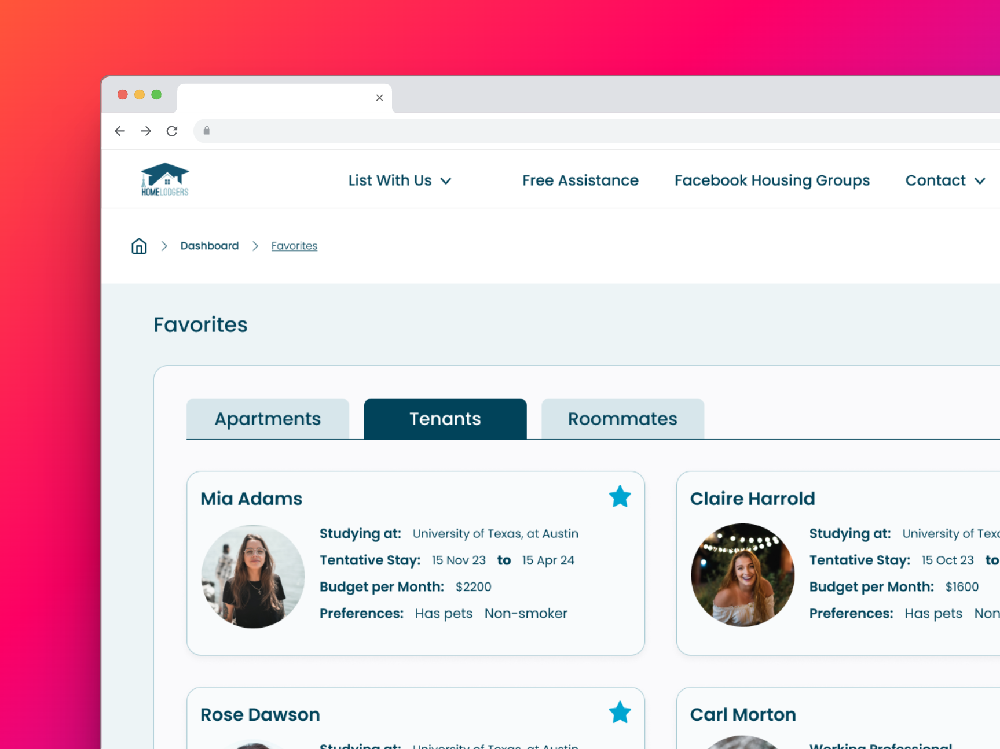

HomeLodgers PropTech Platform
HomeLodgers: Bridging the gap between students & accommodation providers across the globe.
The HomeLodgers project involved a comprehensive redesign of both the website and mobile application aimed at enhancing user experience and functionality. As the lead UI Designer, my role was to oversee and execute the visual redesign and ensure a consistent, user-friendly interface across all platforms.Key Improvements:
- Comprehensive Dashboard: Developed a central dashboard that provides users with an immediate overview of their activities and interactions. This dashboard features an intuitive layout that organizes information hierarchically, ensuring that the most frequently used data is the most accessible. Enhancements include real-time updates, customizable widgets, and interactive data visualization, which help users make informed decisions quickly.
- Streamlined Forms:Redesigned all forms within the platform to improve ease of use and
reduce user error. Employed a
minimalist design approach that emphasizes clarity and simplicity.
- Smart Form Fields: Incorporated conditional logic that adapts the form based on the user's entries, reducing the number of steps required to complete it.
- Inline Validation: Integrated immediate feedback mechanisms to validate data as it is entered, helping users correct errors in real-time without waiting for submission.
- Multi-step Layouts: For more complex interactions, forms are broken down into manageable steps, guiding users through the process without overwhelming them.
- Responsive and Adaptive Design: Ensured that the dashboard and forms are fully responsive, providing a seamless experience on various devices and screen sizes. Implemented adaptive design techniques to optimize layout and functionality based on the user’s device capabilities.
- Iterative Design Feedback: Established a continuous feedback loop with stakeholders and users to gather real-time insights, allowing for dynamic adjustments to the design based on direct user data and preferences.